Cogu e Mélio (Mushy & Shroom) transformam cura em pressão. Um cogumelo aparentemente inativo pode virar mais um atacante, e cada ciclo de cura pode aumentar o dano de Sementes Podres. Por isso, eu monto esse tanque da Natureza pensando em uma pergunta: a equipe consegue manter os cogumelos vivos até eles serem ativados?
Neste guia, explico quais habilidades e melhorias eu priorizaria, quando trocar de talismã e como montar uma equipe que apoie as invocações. Comece pela sobrevivência e pela cura constante; depois, invista no dano que aproveita essas duas vantagens.
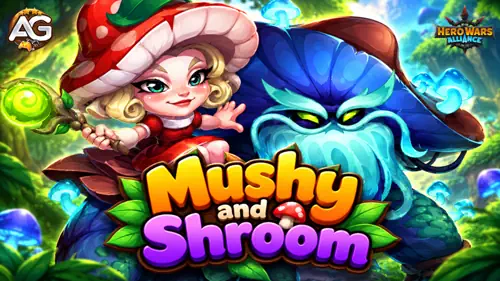

Índice
- Quem são Cogu e Mélio?
- Avaliações, pontos positivos e negativos
- Estatísticas máximas com talismãs
- Qual talismã usar?
- Habilidades e prioridades de evolução
- Melhores visuais
- Prioridade dos artefatos
- Prioridade dos glifos
- Como enfrentar Cogu e Mélio
- Sinergias
- Equipes sugeridas
- Dicas para Hidras
- Veredito final do Alexandre
Quem são Cogu e Mélio em Hero Wars Alliance?
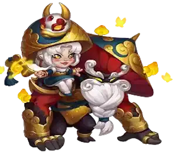
- Classe principal: Tanque
- Posição: Linha de frente
- Atributo principal: Inteligência
- Facção: Caminho da Natureza
- Parceiros principais: Alvanor e curandeiros confiáveis
Cópia Perfeita cria Mélios adicionais que começam inativos. Curá-los até a Vida máxima ativa seus ataques e as habilidades aprendidas. Os Cogumelos de Esporos também precisam de cura antes de avançarem e explodirem. Assim, o suporte de cura determina a velocidade com que as invocações passam a ameaçar o adversário.
A limitação importante é o tempo de preparação: os Mélios invocados não ganham energia, e suas estatísticas são copiadas do início da batalha. Não espere que uma invocação inativa ataque imediatamente.
Cogu e Mélio — comparação das estatísticas máximas com talismãs
As duas colunas consideram nível 120, seis estrelas, Laranja +4 com todos os equipamentos, visuais no nível 60 incluindo o Visual Lunar+, glifos no nível 80, artefatos no nível 100 com seis estrelas e Dádiva dos Elementos no nível 30. Cada talismã está no nível 50, com o total máximo de novos sorteios. Não estão incluídos bônus de coleções, pesquisas do Reino nem melhorias temporárias.
| Estatística |
Talismã de Micélio |
Talismã dos Fungos |
|---|---|---|
|
|
15.214 | 13.214 |
|
|
2.344 | 2.344 |
|
|
2.829 | 2.829 |
|
|
525.951 | 525.951 |
|
|
19.952 | 17.952 |
|
|
110.425 | 104.425 |
|
|
57.759 | 37.959 |
|
|
43.394 | 41.394 |
|
|
10.650 | 10.650 |
|
|
0 | 4.000 |
|
|
2.571 | 9.171 |
O bônus de Armadura do artefato de arma é temporário e não entra nestes totais. Nenhum dos dois talismãs altera a Vida máxima nesta comparação.
Guia de talismãs de Cogu e Mélio
Minha recomendação: use o 1º talismã, Talismã de Micélio, no PvP; use o 2º talismã, Talismã dos Fungos, no PvE. Micélio combina Inteligência e Armadura; Fungos combina Chance de Acerto Crítico Mágico e Tenacidade.
Somente o talismã equipado fornece seus bônus. Os visuais funcionam de outra forma: os bônus de atributos desbloqueados continuam ativos, independentemente da aparência exibida. Nos novos sorteios, considere a soma dos três espaços.
1 — Talismã de Micélio
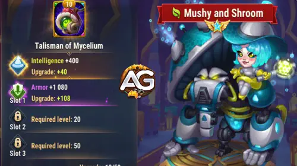
| Atributo principal | Bônus total dos novos sorteios |
|---|---|
| Inteligência +2.000 | Armadura +19.800 |
Micélio é o talismã que recomendo para PvP, pois Inteligência e Armadura ajudam Cogu e Mélio a enfrentar equipes de heróis. A Inteligência acrescenta 6.000 Ataque Mágico (2.000 × 3), 2.000 de Defesa Mágica e 2.000 de Ataque Físico. O total de +19.800 de Armadura ajuda contra dano físico, enquanto o Ataque Mágico melhora as fórmulas que usam esse atributo.
2 — Talismã dos Fungos
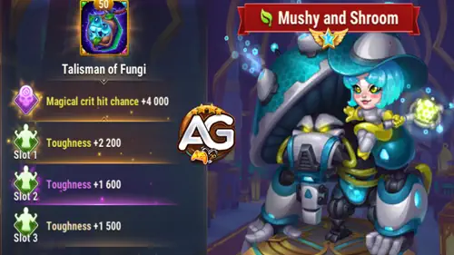
| Atributo principal | Bônus total dos novos sorteios |
|---|---|
| Chance de Acerto Crítico Mágico +4.000 | Tenacidade +6.600 |
Fungos é o talismã que recomendo para PvE. Ele troca Inteligência e Armadura por potencial de acerto crítico mágico e redução de dano com Vida baixa. Os +4.000 de Chance de Acerto Crítico Mágico aumentam a probabilidade de críticos mágicos; são pontos de atributo, não uma chance de 4.000%. A Tenacidade ajuda quando a Vida fica abaixo de 50%, e sua eficácia depende do atributo principal do atacante.
Dicas do Alexandre: Escolha conforme o modo de jogo: Micélio para PvP e Fungos para PvE. Micélio ajuda a linha de frente no PvP com Armadura e Inteligência; Fungos é minha escolha para PvE pela Chance de Acerto Crítico Mágico e Tenacidade. Fungos não aumenta as fórmulas básicas por meio de Ataque Mágico, portanto um valor básico menor na comparação não muda minha recomendação por modo de jogo.
Prioridade de evolução das habilidades de Cogu e Mélio
Entenda como Cogu e Mélio transformam cura em invocações ativas e dano e veja quais habilidades priorizar para montar uma estratégia de batalha consistente.
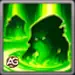
1 — Cópia Perfeita
Descrição da habilidade: Invoca um Mélio inativo com parte da Vida faltando. A cópia tem as estatísticas do herói no início da batalha. Ela pode ser alvo de ataques, feitiços ofensivos e feitiços de cura.
Quando a Vida do Mélio é completamente restaurada pela primeira vez, ele é ativado. Depois disso, pode atacar e usar todas as habilidades aprendidas pelo herói, mas não consegue recuperar energia.
Você pode invocar no máximo 5 Mélios.
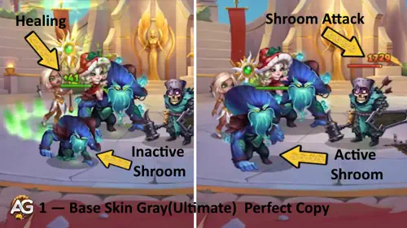
Explicação da habilidade: Uma cópia com a Vida completamente restaurada acrescenta outro Mélio ativo. Pense na cura como o que ativa a invocação, e não apenas como recuperação após sofrer dano.
Fórmula com Talismã de Micélio
- Vida inicial do Mélio: 272.677,95 (45% × 525.951 de Vida + 300 × 120).
Fórmula com Talismã dos Fungos
- Vida inicial do Mélio: 272.677,95 (45% × 525.951 de Vida + 300 × 120).
Informações da animação e funcionamento
- Nível da habilidade: 120
- Atraso da animação: 1,2 segundos
Prioridade de evolução: Muito alta — mais cópias ativas fortalecem a estratégia em lutas longas e acrescentam fontes de pressão.
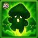
2 — Micélio Ramificado
Descrição da habilidade: Invoca um micélio com 3 Cogumelos de Esporos inativos com parte da Vida faltando. Eles podem ser alvo de ataques, feitiços ofensivos e feitiços de cura. A Vida máxima deles equivale a 30% da Vida do herói no início da batalha.
Quando a Vida do cogumelo é completamente restaurada, ele corre até os inimigos e explode, causando dano e espalhando uma nuvem de Esporos de Cogumelo a curta distância. A nuvem aplica Silêncio nos inimigos em sua área por 4 segundos.
Ao escolher o alvo, prioriza inimigos próximos que ainda não estejam afetados pelos Esporos de Cogumelo.
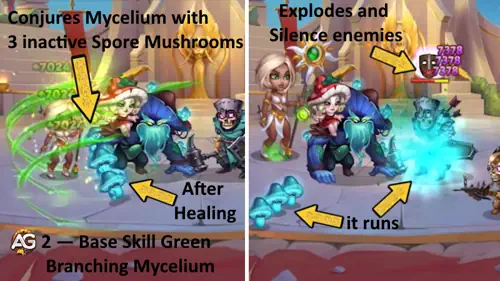
Explicação da habilidade: Esses três cogumelos fornecem dano e Silêncio após a preparação. Um inimigo silenciado não pode usar habilidades de dano mágico ou puro, habilidades sem dano nem habilidades que escalam com Ataque Mágico. Ataques físicos e habilidades físicas permitidas continuam funcionando.
Fórmula com Talismã de Micélio
- Vida máxima do Cogumelo de Esporos: 157.785,3 (30% × 525.951 de Vida).
- Vida inicial: 52.595,1 (10% × 525.951 de Vida).
- Dano da explosão: 10% Vida + 25% Ataque Mágico + 70 × 120 = 88.601,35 (52.595,1 + 27.606,25 + 8.400).
Fórmula com Talismã dos Fungos
- Vida máxima do Cogumelo de Esporos: 157.785,3 (30% × 525.951 de Vida).
- Vida inicial: 52.595,1 (10% × 525.951 de Vida).
- Dano da explosão: 10% Vida + 25% Ataque Mágico + 70 × 120 = 87.101,35 (52.595,1 + 26.106,25 + 8.400).
Informações da animação e funcionamento
- Nível da habilidade: 120
- Recarga inicial: 3 segundos
- Recarga: 12 segundos
- Atraso da animação: 0,88 segundos
- Duração do Silêncio: 4 segundos
- Área: 100
Prioridade de evolução: Alta — dano com Silêncio é valioso, mas os cogumelos precisam primeiro receber cura até a Vida máxima.
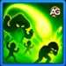
3 — Sementes Podres
Descrição da habilidade: Causa dano ao inimigo mais próximo. O dano aumenta para cada ponto de cura recebido pelos aliados desde a última ativação desta habilidade.
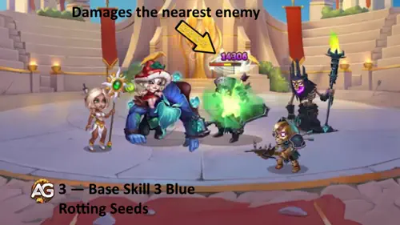
Explicação da habilidade: Este é o retorno mais direto do investimento em cura constante para a equipe. O dano extra aumenta conforme a cura recebida desde a ativação anterior.
Fórmula com Talismã de Micélio
- Dano básico: 10% Vida + 40% Ataque Mágico + 50 × 100 = 101.765,1 (52.595,1 + 44.170 + 5.000).
- Dano extra: 60% × cura recebida pelos aliados desde a ativação anterior (100.000 de cura acrescentam 60.000 de dano).
Fórmula com Talismã dos Fungos
- Dano básico: 10% Vida + 40% Ataque Mágico + 50 × 100 = 99.365,1 (52.595,1 + 41.770 + 5.000).
- Dano extra: 60% × cura recebida pelos aliados desde a ativação anterior (100.000 de cura acrescentam 60.000 de dano).
Informações da animação e funcionamento
- Nível da habilidade: 100
- Recarga: 10 segundos
- Atraso da animação: 1,5 segundos
Prioridade de evolução: Muito alta — transforma a cura de que sua equipe já precisa em dano direto contra o inimigo mais próximo.
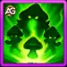
4 — Crescimento Selvagem
Descrição da habilidade: Habilidade passiva. Cogu cura Mélios inativos e Cogumelos de Esporos.
O efeito acumula para cada Mélio ativo no campo de batalha.
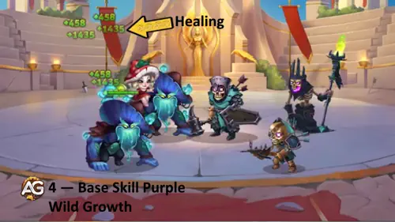
Explicação da habilidade: Cogu ajuda as invocações inativas a alcançar a Vida necessária para serem ativadas. Cada Mélio ativo acrescenta mais uma camada desse efeito de cura.
Fórmula com Talismã de Micélio
- Cura por segundo, por camada: 1% Vida + 4% Ataque Mágico + 10 × 80 = 10.476,51 (5.259,51 + 4.417 + 800).
Fórmula com Talismã dos Fungos
- Cura por segundo, por camada: 1% Vida + 4% Ataque Mágico + 10 × 80 = 10.236,51 (5.259,51 + 4.177 + 800).
Informações da animação e funcionamento
- Nível da habilidade: 80
- Intervalo da cura: 1 segundo
Prioridade de evolução: Muito alta — ajuda a ativar as cópias e os Cogumelos de Esporos, conectando as demais habilidades.
Melhores visuais para Cogu e Mélio
Escolha os visuais de Cogu e Mélio pelo impacto na sobrevivência, na cura e no dano. A ordem de exibição foi mantida; siga as prioridades de evolução abaixo.
Visual padrão
Bônus no nível 60: Inteligência +1.365.
Inteligência ajuda no dano, na cura passiva e na resistência contra magia. Os +1.365 de Inteligência fornecem +4.095 de Ataque Mágico, +1.365 de Defesa Mágica e +1.365 de Ataque Físico.
Pedras de visual: 30.825.
Prioridade de evolução: Alta — Inteligência ajuda no dano, na cura passiva e na resistência contra magia.
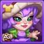
Visual de Primavera
Bônus no nível 60: Defesa Mágica +10.650.
Útil contra pressão mágica. Antecipe essa melhoria se o dano mágico for o motivo de sua linha de frente cair.
Pedras de visual: 55.410 no total (5.000 para adquirir + 50.410 para evoluir).
Prioridade de evolução: Média — útil contra pressão mágica.
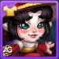
Visual Lunar+
Bônus no nível 60: Ataque Mágico +10.650; total com o Visual+: +21.300.
Ataque Mágico melhora Sementes Podres, as explosões e a cura passiva. O visual básico fornece +10.650; ao adquirir o Visual+, o bônus dobra para +21.300.
Pedras de visual: 55.410 no total (5.000 para adquirir + 50.410 para evoluir). O Visual+ é desbloqueado separadamente; o custo de pedras para evoluir permanece igual.
Prioridade de evolução: Muito alta — Ataque Mágico melhora Sementes Podres, as explosões e a cura passiva.
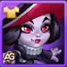
Visual Demoníaco
Bônus no nível 60: Armadura +10.650.
Armadura dá à linha de frente mais tempo para chegar aos primeiros ciclos de cura contra atacantes físicos.
Pedras de visual: 55.410 no total (5.000 para adquirir + 50.410 para evoluir).
Prioridade de evolução: Alta — Armadura dá à linha de frente mais tempo para chegar aos primeiros ciclos de cura contra atacantes físicos.
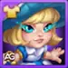
Visual Angelical
Bônus no nível 60: Vida +106.645.
Vida melhora a sobrevivência e os componentes de Vida das invocações, do dano e da cura. Garanta cura suficiente para preencher as barras de Vida maiores.
Pedras de visual: 55.410 no total (5.000 para adquirir + 50.410 para evoluir).
Prioridade de evolução: Muito alta — Vida beneficia várias partes das habilidades ao mesmo tempo.
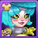
Visual Cibernético
Bônus no nível 60: Armadura +10.650.
É mais um bônus permanente de Armadura. Evolua-o para melhorar a sobrevivência contra dano físico, assim como o Visual Demoníaco.
Pedras de visual: 55.410 no total (5.000 para adquirir + 50.410 para evoluir).
Prioridade de evolução: Alta — acrescenta outro bônus permanente de Armadura.
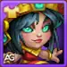
Visual Tribal
Bônus no nível 60: Penetração Mágica +10.650.
Penetração Mágica ajuda o dano mágico a atravessar a Defesa Mágica inimiga. Não aumenta a cura nem a Vida das invocações.
Pedras de visual: 55.410 no total (5.000 para adquirir + 50.410 para evoluir).
Prioridade de evolução: Média-alta — Penetração Mágica ajuda o dano mágico a atravessar a Defesa Mágica inimiga.
Dicas do Alexandre: Eu começaria pelo Visual Angelical e pelo Visual Lunar+, depois reforçaria Armadura e Inteligência. Se Cogu e Mélio morrerem antes de ativar as invocações, priorize Armadura antes de mais melhorias ofensivas. Os bônus de todos os visuais desbloqueados se somam.
Prioridade de evolução dos artefatos de Cogu e Mélio
Compare a prioridade dos artefatos de Cogu e Mélio pelos bônus permanentes de Vida, Ataque Mágico e Inteligência e pela Armadura temporária para a equipe.
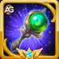
1 — Varinha do Crescimento (Arma)
Cópia Perfeita pode ativar o bônus de +32.040 de Armadura para a equipe por 9 segundos, com 100% de chance de ativação nas seis estrelas. Ele protege a equipe durante a preparação.
Prioridade de evolução: Alta — a Armadura para a equipe dá mais tempo para curar e ativar as invocações.
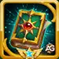
2 — Tomo do Conhecimento Arcano (Livro)
O livro acrescenta permanentemente +53.394 de Vida e +10.680 de Ataque Mágico. Ambos os atributos melhoram as fórmulas das habilidades, por isso este é meu primeiro investimento entre os artefatos.
Prioridade de evolução: Muito alta — Vida e Ataque Mágico permanentes melhoram várias partes das habilidades ao mesmo tempo.
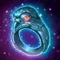
3 — Anel da Inteligência (Anel)
O anel acrescenta +3.990 de Inteligência: +11.970 de Ataque Mágico, +3.990 de Defesa Mágica e +3.990 de Ataque Físico. Fortalece o lado mágico da evolução sem substituir a Vida fornecida pelo livro.
Prioridade de evolução: Alta — Inteligência aumenta Ataque Mágico e Defesa Mágica.
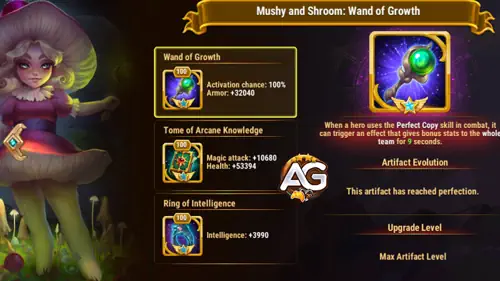
Prioridade de evolução dos glifos de Cogu e Mélio
Evolua os glifos de Cogu e Mélio com foco em Vida, Ataque Mágico e Inteligência. Ajuste Armadura e Defesa Mágica para manter a linha de frente viva por mais tempo.

1 — Ataque Mágico
Estatísticas no nível 80: +12.850 Ataque Mágico.
Ataque Mágico aumenta o dano e a cura de Crescimento Selvagem.
Prioridade de evolução: Alta — Ataque Mágico aumenta o dano e a cura de Crescimento Selvagem.

2 — Vida
Estatísticas no nível 80: +122.800 Vida.
Vida melhora a sobrevivência e as fórmulas das habilidades que usam esse atributo.
Prioridade de evolução: Muito alta — Vida melhora a sobrevivência e as fórmulas das habilidades que usam esse atributo.

3 — Armadura
Estatísticas no nível 80: +12.850 Armadura.
Armadura ajuda a linha de frente a sobreviver à pressão física.
Prioridade de evolução: Alta — Armadura ajuda a linha de frente a sobreviver à pressão física.

4 — Defesa Mágica
Estatísticas no nível 80: +12.850 Defesa Mágica.
Defesa Mágica melhora a sobrevivência contra dano mágico; aumente sua prioridade nesses confrontos.
Prioridade de evolução: Média — Defesa Mágica melhora a sobrevivência contra dano mágico; aumente sua prioridade nesses confrontos.

5 — Inteligência
Estatísticas no nível 80: +2.110 Inteligência.
Inteligência acrescenta +6.330 de Ataque Mágico, +2.110 de Defesa Mágica e +2.110 de Ataque Físico no nível 80.
Prioridade de evolução: Alta — Inteligência acrescenta +6.330 de Ataque Mágico, +2.110 de Defesa Mágica e +2.110 de Ataque Físico no nível 80.
Como enfrentar Cogu e Mélio em Hero Wars Alliance
Interrompa o ciclo de cura e ativação antes que as cópias ganhem força. Estes heróis ajudam em determinados confrontos, mas não garantem vitória contra qualquer formação.

A Chama Amaldiçoada impede a cura dos alvos afetados, e Limbo transforma a cura bloqueada em dano mágico. Impedir a cura atrasa a ativação dos cogumelos inativos e enfraquece a pressão que depende da cura recebida pela equipe.

Paralisia atinge o inimigo com maior Ataque Mágico. Quando esse alvo é Cogu e Mélio, o controle interrompe as ações do herói principal; Sombra Aterrorizante e Laços da Escuridão acrescentam pressão direcionada. Confira o Ataque Mágico de toda a equipe inimiga antes de escolhê-lo.

A Barreira de Rakashi absorve dano mágico e puro, atrapalhando a pressão mágica. O Juramento de Rakashi impede que dano mágico ou puro finalize Rufus enquanto seus aliados iniciais continuarem vivos. Leve dano físico para finalizá-lo ou elimine primeiro seus aliados.
Sinergias de Cogu e Mélio
Eu procuro cura constante primeiro, depois proteção ou outro causador de dano. Os parceiros abaixo estão em ordem alfabética.
Abraço de Fogo fornece cura, enquanto Escudo Flamejante pode proteger um aliado vulnerável. A cura recebida contribui para Sementes Podres. Considere os sacrifícios de Vida das habilidades de Aidan ao avaliar se a equipe sobrevive ao início da batalha.
Runa da Vida cura a equipe e dobra a eficácia da cura para aliados da Natureza enquanto está ativa. Runa da Terra protege permanentemente os aliados da Natureza contra ataques básicos. Essa combinação ajuda Cogu e Mélio a sobreviver e aproveitar a cura.
Rainha das Flores fornece cura recorrente à equipe enquanto a flor permanece viva. Esses ciclos de cura ajudam a manter a pressão e contribuem para Sementes Podres. Proteja a flor e dê tempo para a estratégia funcionar.
Xe'Sha acrescenta dano mágico e um bônus de Ataque Mágico. Seus sacrifícios de Vida dos aliados criam necessidade de cura, mas perder Vida não é receber cura: o curandeiro precisa restaurá-la para que ela contribua para o dano de Cogu e Mélio baseado em cura.
Equipes sugeridas para Cogu e Mélio em 2026
Estas formações são pontos de partida baseados nas necessidades das habilidades. Compare os resultados com seus adversários e níveis de investimento; o nome de uma equipe não garante vitória na Arena.
Equipe 1 — Sustentação da Natureza
Aurora protege a linha de frente, Alvanor ajuda na sustentação da Natureza e Maya acrescenta cura enquanto Mojo causa pressão mágica. Observe se a cura chega às invocações rápido o suficiente. Esta formação usa Mojo com Talismã 2, Maya com Talismã 1, Alvanor com Talismã 1, Cogu e Mélio com Talismã 1 e Aurora com Talismã 2.
|
|
|
|
|
|

Mojo |

Maya |

Alvanor |
Cogu e Mélio |

Aurora |
Equipe 2 — Cura e pressão mágica
Astaroth protege o início da batalha enquanto Aidan e Martha ajudam na sustentação. Xe'Sha acrescenta pressão mágica. A cura recebida é o que Cogu e Mélio precisam para Sementes Podres, então teste a sobrevivência antes de acrescentar mais dano. Esta formação usa Martha com Talismã 1, Aidan com Talismã 2, Xe'Sha com Talismã 2, Cogu e Mélio com Talismã 1 e Astaroth com Talismã 2.
|
|
|
|
|
|

Martha |

Aidan |

Xe'Sha |
Cogu e Mélio |

Astaroth |
Equipes mais populares para Cogu e Mélio em Hero Wars Alliance
- Polaris, Orion, Morrigan, Cogu e Mélio, Corvus
- Aidan, Polaris, Xe'sha, Tempus, Cogu e Mélio
- Orion, Mojo, Alvanor, Cogu e Mélio, Aurora
- Martha, Aidan, Xe'sha, Cogu e Mélio, Astaroth
- Estrela Negra, Mojo, Alvanor, Cogu e Mélio, Aurora
- Orion, Mojo, Alvanor, Cogu e Mélio, Astaroth
- Orion, Mojo, Alvanor, Cogu e Mélio, Andvari
Cogu e Mélio contra Hidras: o que eu testo primeiro
O atrativo contra Hidras é o dano constante: a cura mantém a equipe funcionando e alimenta Sementes Podres enquanto as invocações se desenvolvem. Eu testo primeiro uma formação com bastante cura e comparo dano e sobrevivência contra a mesma cabeça.
- Confira se as cópias são ativadas cedo o suficiente para contribuir.
- Mantenha os curandeiros vivos para repetir os ciclos de cura.
- Comece com o Talismã dos Fungos, minha recomendação para PvE, e compare os resultados contra a mesma cabeça de Hidra em condições semelhantes.
- Não presuma um dano total fixo nem uma vitória em uma única tentativa apenas por usar esta equipe.
Veja o guia de melhores equipes para Hidras para conhecer outras formações.
Veredito final do Alexandre
Eu investiria em Cogu e Mélio quando já tivesse suporte de cura confiável. Comece por Vida, mantenha a linha de frente estável e fortaleça o Ataque Mágico que melhora cura e dano. Minha recomendação de talismã segue o modo de jogo: Micélio para PvP, com Inteligência e Armadura; Fungos para PvE, com Chance de Acerto Crítico Mágico e Tenacidade.
A batalha que eu quero ver é simples: a Vida dos cogumelos inativos se completa, as cópias começam a atacar e a cura repetida vira dano. Se essa sequência não estiver acontecendo, ajuste cura e sobrevivência antes de gastar na próxima melhoria ofensiva.